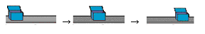
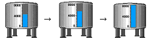
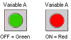
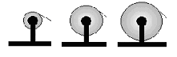
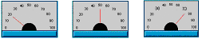
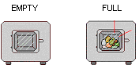
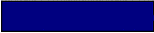

|
|
|
|
|
|
|
|
Use animation to change the size and position of objects on a panel and produce eye-catching on-screen movement with simple objects.


Vijeo-Designer supports the following eight types of animation which you can add to the objects you draw.
|
Animation Type |
Description |
|
Color Animation Change an object's color |
You can easily change an object's color based on changing variable values. With Color animation, you can create a graphic object that changes colors, as shown below.  For more information about color animation, see Section 8.6, Changing Colors Using Variable Values. |
|
Fill Animation Show level changes graphically |
You can gradually fill part of an object with color, both vertically and horizontally, based on changing variable values. Fill Animation is useful for creating bar graphs. Fill animation uses Integer variables and device addresses.
For more information about graphs, see Section 12.5.1, Working with Fill Animation. |
|
Size Animation Show changes in volume |
You can change the vertical/horizontal size of an object based on changing variable values. For example, with Size Animation, you can graphically show changes in roller thickness, as shown below.  For more information, see Section 8.2, Resizing Objects Using Variable Values. |
|
Position Animation Move an object vertically and horizontally |
You can move an object vertically and horizontally based on changing variable values. For example, show the position of a product on a conveyor belt graphically, as shown below. For more information, see Section 8.3, Moving Objects Using Variable Values. |
|
Rotate Animation Rotate an object |
You can rotate an object to specified angles based on changing variable values. For example, you can display changes in measurement readings with a meter needle (as shown below), or show the position of rotating fan blades.  For more information, see Section 8.4, Rotating Objects Using Variable Values. |
|
Touch Animation Use an object as a switch |
With Touch Animation, you can create an object that turns on or off (switch) or writes data to a variable. Up to 32 Touch Animation functions can be used on a single object. For information about switches, see Section 9.2.7, Creating a Custom Switch. |
|
Value Animation Display or enter data |
You can display numeric values on the panel or allow data input from the keyboard/keypad. Using a BOOL variable, you can display different messages based on available states. Value animation is useful for displaying numeric data, lamp states, text, and enabling keypad inputs. For information about displaying numeric data, see Section 11.3.2, Creating Your Own Numeric Displays. For more information about displaying lamps, see Section 10.5, Creating Your Own Lamp. For information about displaying text data, see Section 11.6, Displaying Text Using String Display. |
|
Visibility Animation Show/hide objects |
You can make objects visible or invisible based on changing variable values.  You can also set a switch to start or stop blinking based variable values.  For more information, see Section 8.5, Displaying or Hiding Objects Using Variable Values. |